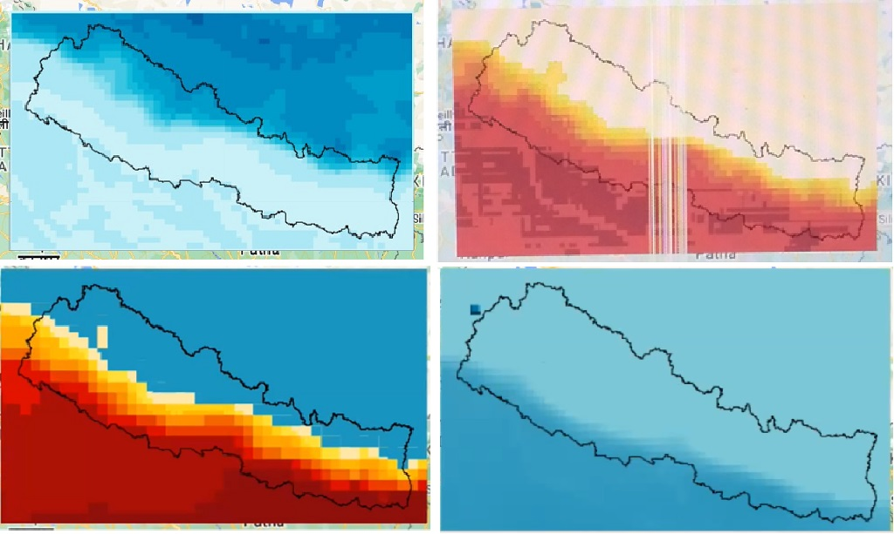
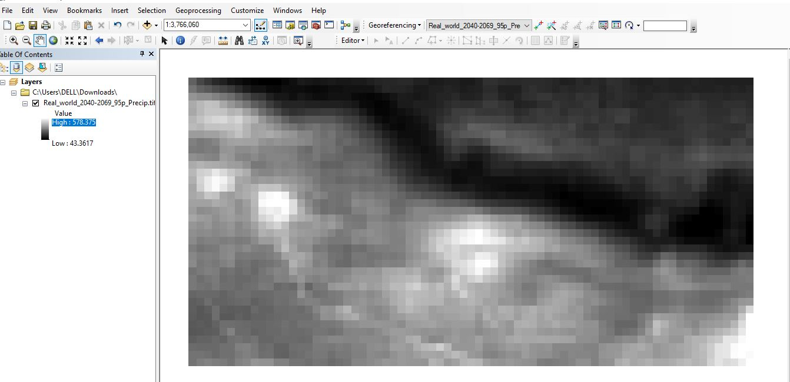
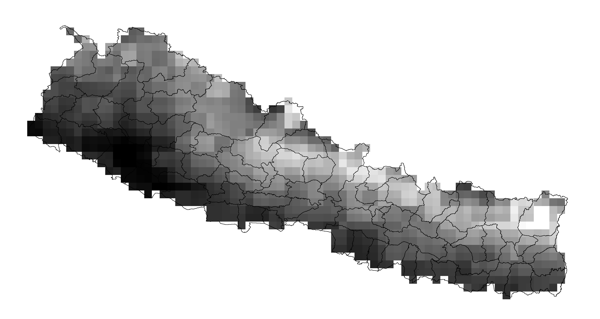
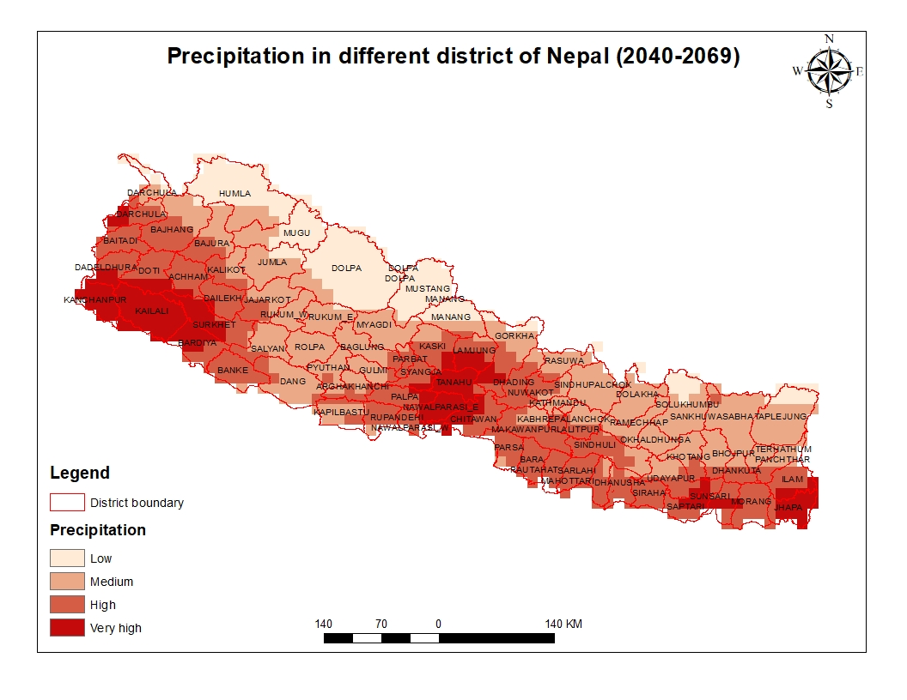

4 Technical Session Day 1 - Cohort B - Saturday, September 17, 2022
Technical Session Day 2 - Cohort A - Monday 12, 2022
Technical Session Day 2 - Cohort B - Saturday 17, 2022
Bishal Bharadwaj and Suman Shree Neupane facilitated the session. Darcy Glenn walked participants through:
Applying a model ensemble’s difference to reanalysis data to find future values
Formatting maps
Dr. David Byrne presented:
The Google Earth Engine catalog
How to import different types of population data from the catalog
For Cohort B, Dr. David Byrne hosted a breakout room that walked participants who missed Day 1 through the introduction to Google Earth Engine and their first code.
Technical Session Day 3 - Cohort A - Sunday, September 18, 2022
Technical Session Day 3 - Cohort B - Friday, September 23, 2022
Technical Session Day 4 - Cohort A - Monday, September 19, 2022
Independant Maps
Participants created their own maps with the climate data.
Map within Google Earth Engine by Keshav Dubedi (top left), Lalita Joshi (top right), Damber Bista (bottom left), and Abash Paudel (bottom right).

Geotiffs that have been exported and can now be imported into any mapping software as demonstrated by Bipin Bhattarai.

Arbin Poudel applied his previous experience with GIS to clip his geotiff to Nepal.

Suraj Bist applied his previous experience with GIS to enhance his final map.
